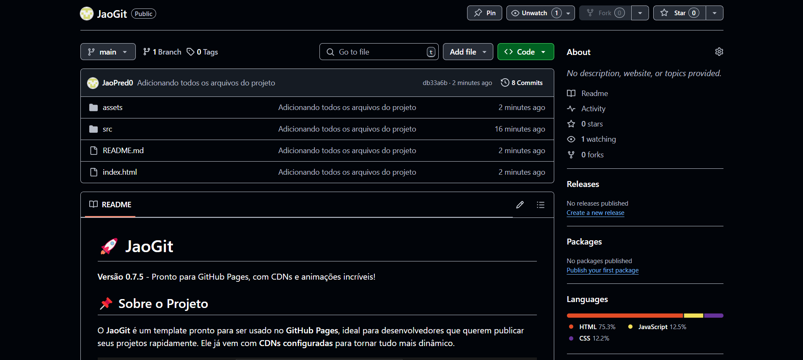

Versão 0.7.5 - Pronto para GitHub Pages, com CDNs e animações incrÃveis!
O JaoGit é um template pronto para ser usado no GitHub Pages, ideal para desenvolvedores que querem publicar seus projetos rapidamente. Ele já vem com CDNs configuradas para tornar tudo mais dinâmico.
CompatÃvel com todos os dispositivos, do celular ao desktop.
Usamos Animate.css e AOS para um design dinâmico.
Leve, rápido e organizado para facilitar sua personalização.
Estamos constantemente melhorando o JaoGit. No futuro, você pode esperar:
Clone este projeto e comece a personalizar agora mesmo!